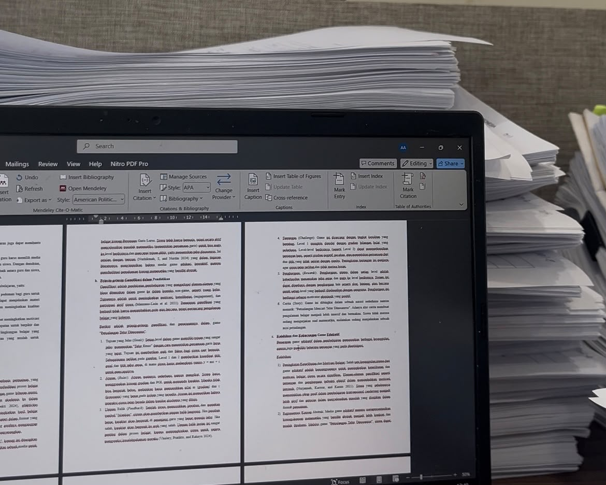
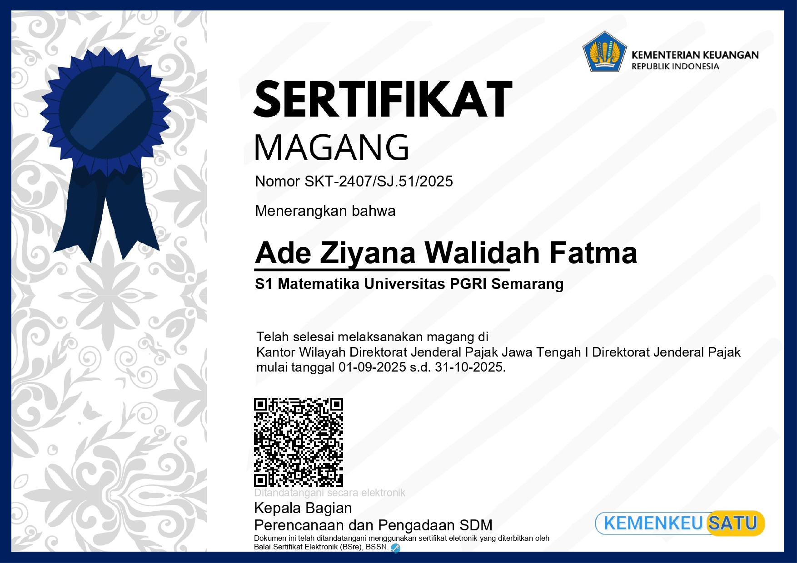
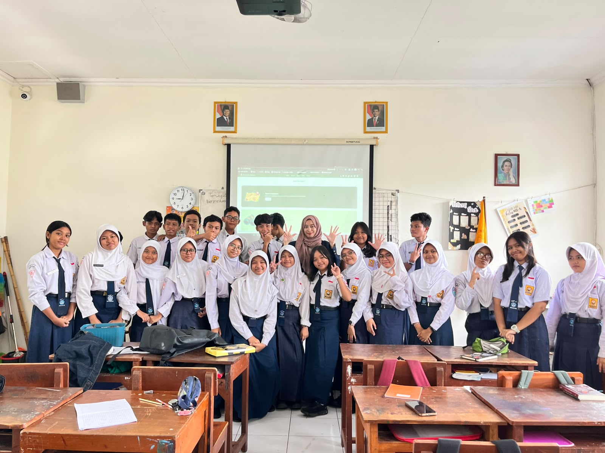
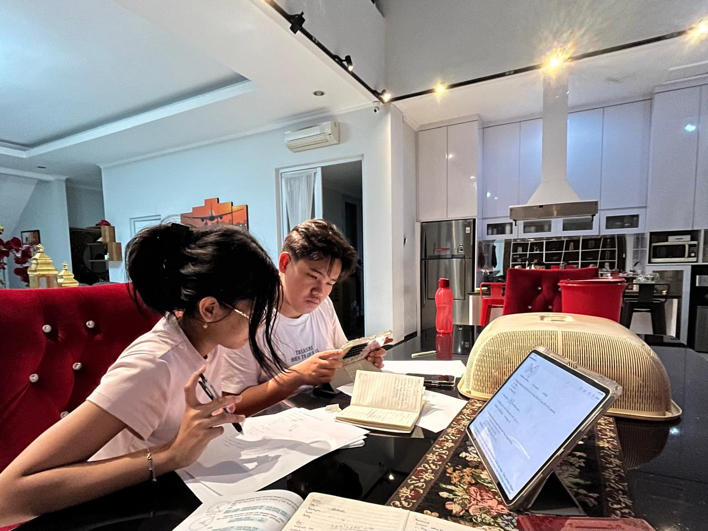

Tentang Saya
Profile & Strategic Mindset
Universitas PGRI Semarang
S1 Pendidikan Matematika
IPK 3.82 / 4.00 (Cum Laude)
Halo! Saya Ade Ziyana Walidah Fatma, lulusan Pendidikan Matematika yang memiliki ketertarikan kuat dalam Data Analysis, SQL, dan Pemodelan Statistik.
Terbiasa mengolah data secara menyeluruh (end-to-end), mulai dari pembersihan data, eksplorasi alur kerja Machine Learning, hingga menyajikannya dalam bentuk dashboard visual yang intuitif menggunakan Looker Studio, Power BI, Tableau, dan Python.
Memiliki keahlian dalam menerjemahkan data kompleks menjadi wawasan strategis yang praktis dan bernilai guna. Latar belakang ini diperkuat dengan pengalaman mengembangkan media teknologi edukasi (Educational Games), efisiensi kueri basis data (BigQuery), serta pengelolaan pengarsipan digital. Saya berfokus menerapkan logika berpikir analitis dan pendekatan kuantitatif untuk mendukung pengambilan keputusan yang tepat berbasis data.
Tax Administration Intern
KPP Pratama Semarang Tengah (Kementerian Keuangan RI)
Role Overview:
- Membantu operasional administrasi perpajakan di Seksi Pengawasan, Pemeriksaan, dan Penagihan serta Seksi Pelayanan.
- Memproses dan memverifikasi faktur pajak & dokumen kepatuhan Wajib Pajak.
- Mengelola alur kerja pengarsipan dokumen fisik dan digital.
Key Contributions:
- Mengelola 3.000+ dokumen arsip STP & memilah Surat Paksa secara sistematis.
- Otomatisasi penomoran & indeks arsip menggunakan rumus Excel VLOOKUP.
- Digitalisasi dokumen pajak ke Excel menggunakan script pemindaian Python.


Teaching Intern (PPL)
SMP Negeri 9 Semarang
Role Overview:
- Merancang instruksi Matematika interaktif & modul bab Persamaan Garis Lurus kelas 8.
- Mengatasi miskonsepsi siswa mengenai Gradien & Y-intercept.
- Mengelola ruang kelas & evaluasi asesmen pembelajaran.
Key Contributions:
- Menerapkan metode Game-Based Learning (GBL) untuk meningkatkan pemahaman siswa.
- Melakukan observasi terstruktur guna mengidentifikasi learning gap.
- Mengintegrasikan software interaktif GeoGebra & Canva.

Mathematics Private Tutor
Genius School & Private Tutoring • Semarang
Memberikan bimbingan privat matematika kustom untuk siswa tingkat dasar dan menengah dengan pendekatan pemahaman konsep secara mendalam, visual, dan menyenangkan.
Tugas Utama
- Merancang materi privat berbasis konsep visual.
- Menggunakan GeoGebra untuk materi Geometri & Grafik.
- Evaluasi diagnostik perkembangan siswa secara berkala.
Pencapaian Utama
- Integrasi kuis tergamifikasi menggunakan Quizizz.
- Meningkatkan partisipasi & kecepatan jawab siswa.
- Menyusun modul soal persiapan ujian berbasis Kurikulum.

Featured Academic & Analytics Projects
Pilih kategori di bawah untuk melihat detail proyek Machine Learning, Data Analytics, Web Game, dan UI/UX Design.
Petualangan Telur Dinosaurus
Web-Based Educational Game for Linear Equations
Mengembangkan media pembelajaran game berbasis web HTML5/p5.js terintegrasi Google Sheets API untuk pencatatan skor siswa secara realtime. Hasil penelitian ini telah diterbitkan di Jurnal Cendekia (SINTA 4).


Customer Segmentation & Classification
Retail Analytics & Predictive Targeting Pipeline
Membangun end-to-end Machine Learning pipeline di Python (Pandas, Scikit-learn). Menerapkan Unsupervised Learning (Clustering) untuk mengelompokkan perilaku pembeli dan Supervised Learning (Classification) untuk prediksi target pemasaran.


Bike Sharing Demand Analytics
Exploratory Data Analysis & Streamlit Web App
Analisis pola permintaan penyewaan sepeda berdasarkan musim, cuaca, dan jam operasional. Dilengkapi dengan Dashboard Interaktif Looker Studio dan aplikasi web Streamlit.


NFT Mobile App & E-Learning Web
High-Fidelity Wireframing & Prototype in Figma
Merancang antarmuka aplikasi NFT Marketplace (Dark Mode, Web3 Wallet integration) serta Platform E-Learning Interaktif berbasis Web untuk mendukung Game-Based Learning.

.png)
Organization & Volunteer Work
Tim Robotika UPGRIS
Staff Mechanical, Design & Kaderisasi (2022 - 2024)
- Pemodelan komponen robot 3D menggunakan SolidWorks & 3D Printing Prototyping.
- Merancang program kaderisasi & mentoring anggota baru Tim Robotika UPGRIS.
KKN UPGRIS Kelurahan Palebon
Publikasi & Koordinator Pendidikan (Jan - Mar 2026)
- Mengelola 20+ publikasi media (JatengVox, TVRI, Koran Cetak) program KKN.
- Inisiator program Bimbingan Belajar "PR Help" & Gerakan Literasi E-Book Anak.
Mangrove Conservation Volunteer
IMAKEN UNDIP x Environmental Community (Des 2023)
Penanaman bibit mangrove di wilayah pesisir Semarang untuk mencegah abrasi pantai & merawat ekosistem laut.
Sekretaris Tim Magang PPL
SMP N 9 Semarang (Feb - Apr 2025)
Menyusun, memformat, dan mengarsipkan laporan akhir magang kelompok tebal 600+ halaman secara rapi dan akurat.
Sertifikat Kompetensi & Hak Cipta (HAKI)
Dicoding Academy, Sertifikasi Robotik, Pelatihan Multimedia, dan Pencatatan HAKI Kemenkumham
Sertifikat Dicoding Academy (8 Kelas)
.png)
Memulai Pemrograman dengan Python
Dicoding Indonesia.png)
Memulai Belajar Dasa AI
Dicoding Indonesia.png)
Belajar Machine Learning Untuk Pemula
Dicoding Indonesia
Belajar Struktur Query Language (SQL)
Dicoding Indonesia.png)
Belajar Dasar Visualisasi Data
Dicoding Indonesia.png)
Belajar Strategi Pengembangan Diri
Dicoding Indonesia.png)
Belajar Dasar Data Science
Dicoding Indonesia.png)
Belajar Dasar Manajemen Proyek
Dicoding IndonesiaSurat Pencatatan Ciptaan HAKI Kemenkumham (7 Karya)
.png)
Bianglala Trigonometri
Pencatatan HAKI
Buku Kompilasi Essay
Pencatatan HAKI.png)
Papan Statistika
Pencatatan HAKI.png)
Galaxy Transboard
Pencatatan HAKI.png)
Geoboard
Pencatatan HAKI.png)
Kotak Perkom
Pencatatan HAKI.png)
Trans Geoboard
Pencatatan HAKIPelatihan Robotik & Multimedia UPGRIS

Pelatihan Robotik Dasar & Mekanikal
UKM Robotik UPGRIS
Panitia KRI
UKM Robotik UPGRIS
Pelatihan UJIKOM Multimedia
LPP UPGRISTools & Competencies
Tools & Software
Technical Expertise
Mari Berkolaborasi
Saya terbuka untuk peluang karir sebagai Data Analyst, Junior Machine Learning Engineer, atau Educational Technology Specialist.